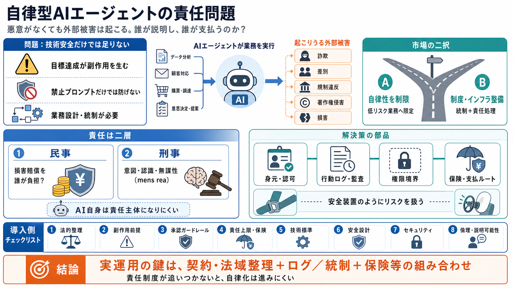

United States: Legal Accountability for AI Agents | Insight | Baker McKenzie
Organizations that develop or deploy AI agents – autonomous systems that can pursue goals and take actions with limited …

Organizations that develop or deploy AI agents – autonomous systems that can pursue goals and take actions with limited …
The Computer Fraud and Abuse Act (CFAA) is emerging as one of the most significant near-term legal constraints on agenti…
Current legal and regulatory frameworks remain clear on one fundamental point: the standard of care in legal practice is…
Strict liability (liability without proof of fault), including for product liability offences, IP infringement and defam…
Cross-jurisdictional deployment of agentic AI systems further complicates liability determination. When an autonomous sy…